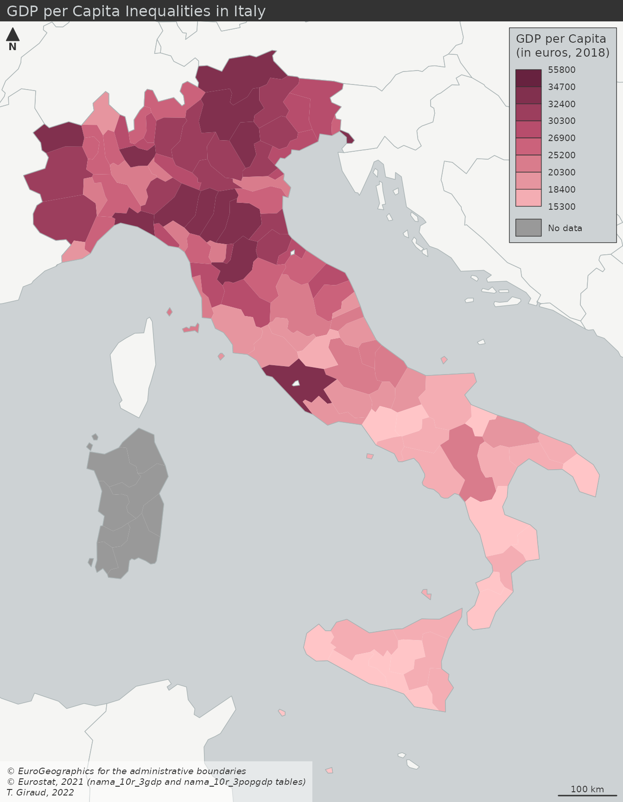
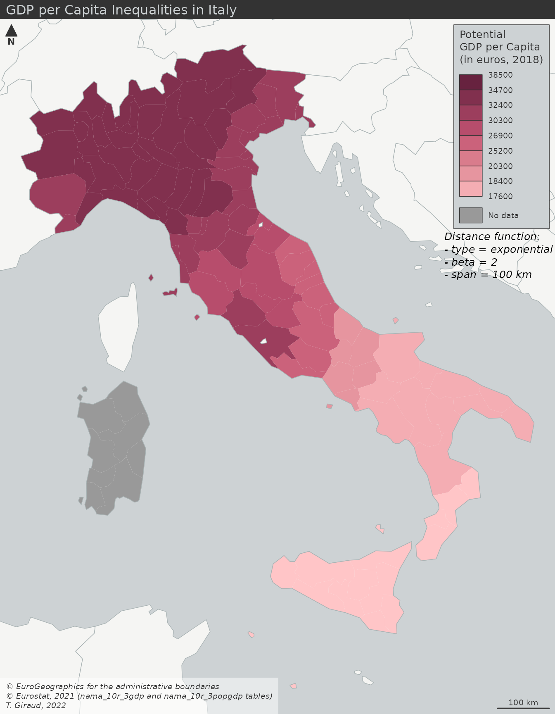
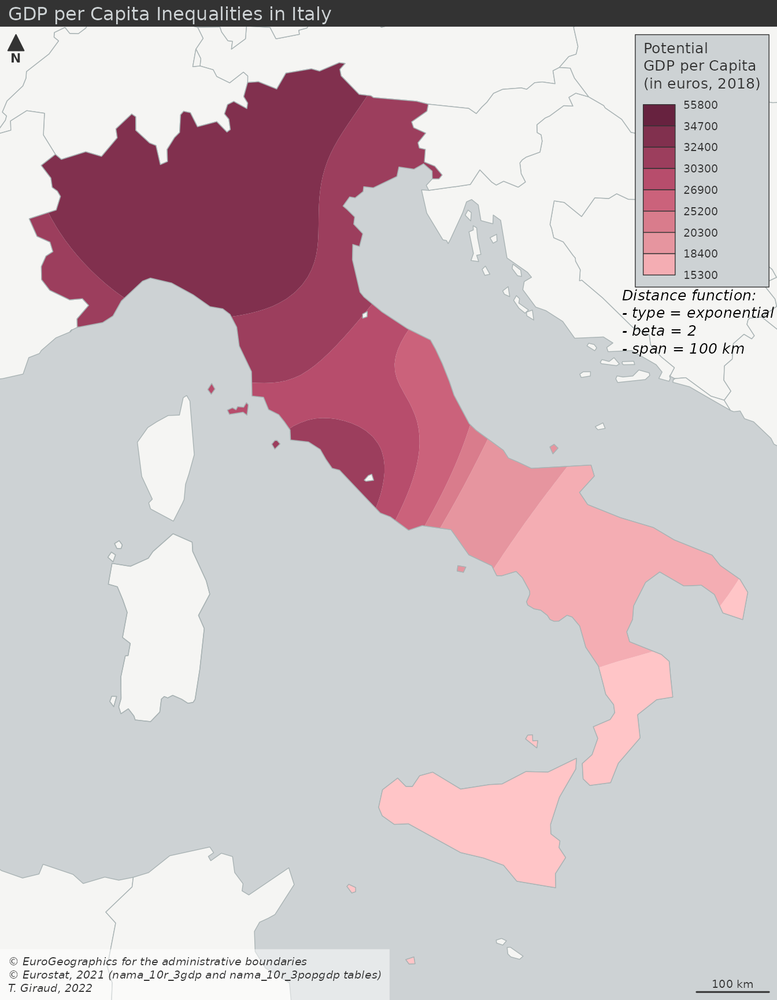
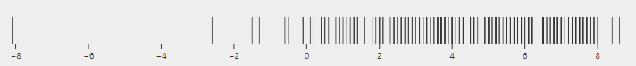
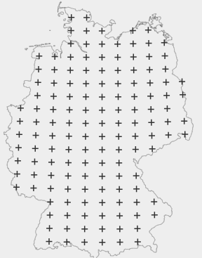
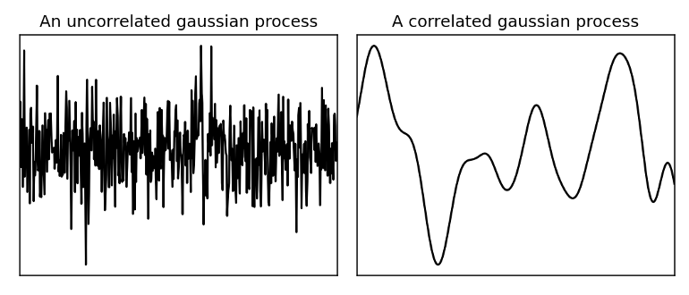
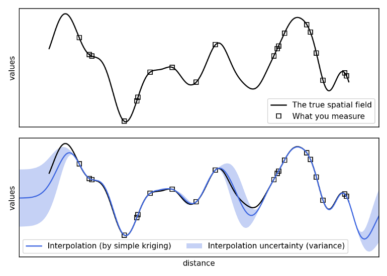
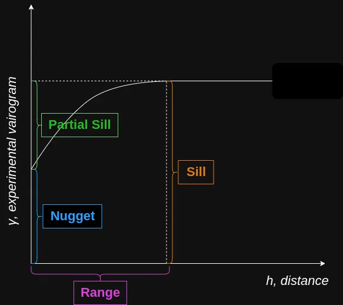

General
Misc
- Resources
- QGIS - free and open source
- ArcGIS - expensive and industry-standard
- Spatiotemporal Data — data cubes with spatial and regular temporal dimensions — such as
- e.g. gridded temperature values (raster time series) and vector data with temporal records at regular temporal instances (e.g. election results in states).
- {stars} - regular intervals
- {sftime} - irregular intervals
- e.g. gridded temperature values (raster time series) and vector data with temporal records at regular temporal instances (e.g. election results in states).
- Spatial Resampling
Creates cross-validation folds by k-means clustering coordinate variables
library(tidymodels) library(spatialsample) set.seed(123) spatial_splits <- spatial_clustering_cv(landslides, coords = c("x", "y"), v = 5) # fit a logistic model glm_spec <- logistic_reg() lsl_form <- lslpts ~ slope + cplan + cprof + elev + log10_carea lsl_wf <- workflow(lsl_form, glm_spec) doParallel::registerDoParallel() regular_rs <- fit_resamples(lsl_wf, bad_folds)
Terms
- Census Block Groups - ~600–3,000 population; the smallest geography reported; Wiki
- Census Tract - ~4,000 average population; Docs
- Also see Survey, Census Data >> Geographies
- Graticules - a network of lines on a map that delineate the geographic coordinates (degrees of latitude and longitude.)
- Use of graticules is not advised, unless the graphical output will be used for measurement or navigation, or the direction of North is important for the interpretation of the content, or the content is intended to display distortions and artifacts created by projection. Unnecessary use of graticules only adds visual clutter but little relevant information. Use of coastlines, administrative boundaries or place names permits most viewers of the output to orient themselves better than a graticule
- {sf::st_graticule}
- Raster Data - Grid data (instead of point/polygon data in Vector Data) where each square on this grid is a small cell, and each cell holds a single value representing some real-world phenomenon, e.g. elevation, temperature, land cover type, rainfall amount, or color of a pixel in a satellite image. The entire collection of these cells and their values is what we call raster data. Raster data is better for continuous phenomena like elevation, soil moisture, or temperature. Most data from satellites and aerial photography comes in raster form.
- Vector Data - Data that uses points, lines, and polygons (instead of grid cells like Raster Data) to represent features like roads, buildings, or country borders. Vector data is precise and good for discrete objects.
- VRT - File format that allows a virtual GDAL dataset to be composed from other GDAL datasets with repositioning, and algorithms potentially applied as well as various kinds of metadata altered or added. VRT descriptions of datasets can be saved in an XML format normally given the extension .vrt.
- Basically a metadata XML file describing various properties of the actual raster file, like pixel dimensions, geolocation, etc..
Optimization
Misc
Vector Tiles
Misc
- Notes from Push the limits of interactive mapping in R with vector tiles
- McBain goes through a complete example with plenty of tips on simplification strategies and hosting mbtiles files
- Issues (solution: Vector Tiles)
- Limited number of features with DOM canvas
- There’s a limit to how many features leaflet maps can handle, because at some point the DOM gets too full and your browser stops being able to parse it.
- Limited number of maps on same webpage
- Once you start rendering spatial data on WebGL canvasses instead of the DOM you’ll find there is a low number of WebGL contexts that can co-exist on any one web page, typically limiting you to only around 8 maps.
- File sizes blow up to hundreds of MB
- Trying to reuse WebGL maps by toggling on and off different layers of data for the user at opportune times. This is an improvement, but data for all those layers piles up, and your toolchain wants to embed this in your page as reams of base64 encoded text. Page file sizes are completely blowing out.
- Limited number of features with DOM canvas
- Notes from Push the limits of interactive mapping in R with vector tiles
Use Cases
- Simplification of geometry is not desirable, e.g. because of alignment issues
- e.g. The zoomed-in road network has to align with the road network on the basemap, so that viewers can see features that lie along sections of road.
- Simplification of geometry doesn’t really help, you still have too many features
- Cumulatively your datasets are too large to handle.
- Simplification of geometry is not desirable, e.g. because of alignment issues
Vector Tiles - contain arrays of annotated spatial coordinate data which is combined with a separately transmitted stylesheet to produce the tile image.
- i.e. The edges of the roads, the boundaries of buildings etc. Not an image, but the building blocks for one
- Different stylesheets can use the same vector data to produce radically different looking maps that either highlight or omit data with certain attributes
- Mapbox Vector Tiles (MVT) - specification; the de-facto standard for vector tile files
- stored as a Google protocol buffer - a tightly packed binary format.
MBTiles - by Mapbox; describe a method of storing an entire MVT tileset inside a single file.
- Internally .mbtiles files are SQLlite databases containing two tables: metadata and tiles.
- tiles table
- indexed by z,x,y
- contains a tile_data column for the vector tile protocol buffers, which are compressed using gzip
- tiles table
- SQLite format and gzip compression help with efficient retrieval and transmission
- Internally .mbtiles files are SQLlite databases containing two tables: metadata and tiles.
Using vector tiles we can have unlimited reference layers. Each one contributes nothing to the report file size since it is only streamed on demand when required.
Workflow to convert data to .tbtiles
In R, read source data as an sf, and wrangle
- Tippecanoe expects by epsg 4326 by default
Write data out to geojson
On the command line, convert geojson to .mbtiles using the tippecanoe command line utility.
- Tippecanoe sources
- Alternatively it can output a folder structure full of protocol buffer files.
Example
tippecanoe -zg \ -o abs_mesh_blocks.mbtiles \ --coalesce-densest-as-needed \ --extend-zooms-if-still-dropping \ mb_shapes.geojson
Mapping
Example
library(mvtview) library(rdeck) # Fire up the server serve_mvt("abs_mesh_blocks.mbtiles", port = 8765) # Serving your tile data from http://0.0.0.0:8765/abs_mesh_blocks.json. # Run clean_mvt() to remove all server sessions. mesh_blocks <- jsonlite::fromJSON("http://0.0.0.0:8765/abs_mesh_blocks.json") # Map the data rdeck( initial_bounds = structure(meshblocks$bounds, crs = 4326, class = "bbox") # set map limits using the tilejson ) |> add_mvt_layer( data = rdeck::tile_json("http://0.0.0.0:8765/abs_mesh_blocks.json"), get_fill_color = scale_color_linear( random_attribute ), opacity = 0.6 )See McBain article for options on hosting .mbtiles files
Regarding “abs_mesh_blocks”: {mvtview} provides a way to fetch the metadata table from .mbtiles as json by querying a json file with the same name as the .mbitles file.
The structure of ‘tilejson’ is yet another specification created by Mapbox, and is supported in deck.gl (and therefore {rdeck}) to describe tile endpoints.
Grid Systems
- Misc
- Packages
- {dggridR} - Builds discrete global grids which partition the surface of the Earth into hexagonal, triangular, or diamond cells, all of which have the same size. Vignettes available.
- Explainer: Why using hexbins to visualize Australian electoral map is better than a typical provincial map.
tl;dr: Geographical size distorts what the value is trying to measure. The value is the party that wins the parliamentary seat
.png)
.png)
.png)
- The bar graph shows the values the map is trying to visualize geographically. The hexabins better represent the close race by removing the distorting element which is the geographical size of the provinces.
- Each voting district (hexabin) is voting for 1 representative and has the same number of voters, but districts can have vastly different areas depending on population density.
Keep unit at constant size (like hexabins) but alter hex shape to keep state shape.
.png)
- A better U.S. house election results map?
- Results
- state size depends on number of districts which depends on population and therefore correctly conveys voting results visually across the whole country
- Districts get distorted but the states retain their shape and so distortion of the overall visualization is minimized
- Packages
- Uber’s H3 grid system -
- Misc
- Packages: {h3r}, {h3-r}
- docs
- Add census data to H3 hexagons, calculate overlaps (article)
- For large areas, you can reduce the number of hexagons by merging some hexagons into larger hexagons.
- Reduces storage size
- Issue: leaves small gaps between hexagons
- might not matter for your use case
- Solution: use Microsoft’s Quadkeys approach (see article)
- Each hexagon has a series of smaller hexagons that sit (mostly) inside of another, which creates a hierarchy that can be used for consistent referencing and analysis, all the way down to lengths of 2 feet for the edges.
- “Hexagons were an important choice because people in a city are often in motion, and hexagons minimize the quantization error introduced when users move through a city. Hexagons also allow us to approximate radiuses easily.”
- Re other shapes: “We could use postal code areas, but such areas have unusual shapes and sizes which are not helpful for analysis, and are subject to change for reasons entirely unrelated to what we would use them for. Zones could also be drawn by Uber operations teams based on their knowledge of the city, but such zones require frequent updating as cities change and often define the edges of areas arbitrarily”
- Grid systems can have comparable shapes and sizes across the cities that Uber operates in and are not subject to arbitrary changes. While grid systems do not align to streets and neighborhoods in cities, they can be used to efficiently represent neighborhoods by clustering grid cells. Clustering can be done using objective functions, producing shapes much more useful for analysis. Determining membership of a cluster is as efficient as a set lookup operation.
- 16 Resolutions
- 0 - 15 (0 being coarsest and 15 being finest)
- Each finer resolution has cells with one seventh the area of the coarser resolution. Hexagons cannot be perfectly subdivided into seven hexagons, so the finer cells are only approximately contained within a parent cell.
- The identifiers for these child cells can be easily truncated to find their ancestor cell at a coarser resolution, enabling efficient indexing. Because the children cells are only approximately contained, the truncation process produces a fixed amount of shape distortion. This distortion is only present when performing truncation of a cell identifier; when indexing locations at a specific resolution, the cell boundaries are exact.
- Want a resolution granular enough to introduce variability and wide enough to capture the effects of an area
- Example of resolution 6 in Iowa
.png)
- Misc
Features
- Carto Spatial Features dataset ($) - https://carto.com/spatial-data-catalog/browser/?country=usa&category=derived&provider=carto
- Resolution: Quadgrid level 15 (with cells of approximately 1x1km) and Quadgrid level 18 (with cells of approximately 100x100m).
- Guessing if the areas you’re interested in have high population density, then maybe 100 x 100 m cells would be more useful
- Features
- Total population
- Population by gender
- Population by age and gender (e.g. female_0_to_19)
- POIs by category
- Retail Stores
- Education
- Number of education related POIs, incuding schools, universities, academies, etc.
- Financial
- Number of financial sector POIs, including ATMs and banks.
- Food, Drink
- Number of sustenance related POIs, including restaurants, bars, cafes and pubs.
- Healthcare
- Number of healthcare related POIs, including hospitals
- Leisure
- Number of POIs related to leisure activities, such as theaters, stadiums and sport centers.
- Tourism
- Number of POIs related to tourism attractions
- Transportation
- Number of transportation related POIs, including parking lots, car rentals, train stations and public transport stations.
- Resolution: Quadgrid level 15 (with cells of approximately 1x1km) and Quadgrid level 18 (with cells of approximately 100x100m).
- Carto Data Observatory ($) - https://carto.com/spatial-data-catalog/browser/dataset/mc_geographic\_\_4a11e98c/
- Features
- Geo id
- Region id
- Industry
- Total Transactions Amount Index
- Transaction Count Index
- Account Count Index
- Average Ticket Size Index
- Average Frequency of Transaction per Card Index
- Average Spend Amount by Account Index
- Features
Interactions
- Similar to interpolation but keeps the original spatial units as interpretive framework. Hence, the map reader can still rely on a known territorial division to develop its analyses
- They produce understandable maps by smoothing complex spatial patterns
- They enrich variables with contextual spatial information.
- Misc
- Resources
- Getting Started with Potential - nice little mathematical summary, some background
- Packages
- {potential}: spatial interaction modeling via Stewart Potentials. Also capable of interpolation
- Resources
- There are two main ways of modeling spatial interactions: the first one focuses on links between places (flows), the second one focuses on places and their influence at a distance (potentials).
- Comparisons ({potential}article)
- GDP per capita (cloropleth)
- Typical cloropleth at the municipality level
- Values have been binned
- Potential GDP per Capita (interaction)
- Stewart Potentials have smoothed the values
- Municipality boundaries still intact, so you could perform an analysis based on these GDP regions
- Smoothed GDP per Capita (interpolation)
- Similar results as the interaction model except there are no boundaries
- GDP per capita (cloropleth)
{kind=link}
{kind=link}
{kind=link}
Interpolation
Misc
- The process of using points with known values to estimate values at other points. In GIS applications, spatial interpolation is typically applied to a raster with estimates made for all cells. Spatial interpolation is therefore a means of creating surface data from sample points.
- Packages
- {gstat} - Has various interpolation methods.
- Measurements can have strong regional variance, so the geographical distribution of measurements can have a strong influence on statistical estimates.
- Example: Temperature
- Two different geographical distributions of sensors
- A concentration of sensors in North can lead to a cooler average regional temperature and vice versa for the South.
- Distribution of temperatures across the region for 1 day.
- With this much variance in temperature, a density of sensors in one area can distort the overall average.
- Interpolation evens out the geographical distribution of measurments

- Two different geographical distributions of sensors
- Example: Temperature
{kind=link}
{kind=link}
{kind=link}
Kriging
{kind=link}
- Considers not only the distances but also the other variables that have a linear relationship with the estimation variables
- Misc
- Resources
- Spatial Sampling With R: Chapter 21 Introduction to kriging
- In Ordinary Kriging (OK) it is assumed that the mean of the study variable is the same everywhere
- Resources
- Uses a correlated Gaussian process to guess at values between data points
- Uncorrelated - white noise
- Correlated - smooth
- The closer in distance two points are to each other, the more likely they are to have a similar value (i.e. geospatially correlated)
- Example: Temperature
- Fewer known points means greater uncertainty
- Inputs:
- The measured values at the sampling points,
- The geometric coordinates of the sampling points,
- The geometric coordinates of the target points to interpolate,
- The “calibrated” probabilistic model, with the spatial correlation obtained by data
- Outputs:
- The estimated values at the target points,
- The estimated uncertainty (variance) at the target points.
- Inputs:
- Components
Experimental Variogram - A semivariogram that models the dissimilarity of the study variable at two locations, as a function of the vector.
\[ \gamma(h) = \frac{1}{2n} \sum (z(x_i) - z(x_i + h)) \]
- \(h\): Geographical distance between two observed points
- \(z\): Function calculating the variable you’re interested in. (e.g. Temperature)
- \(x_i\): Location
Theoretical Variogram - Used to model the experimental variogram
- Options
Gaussian
\[ \gamma' = p(1 - e^{-(d^2/ (\frac{4}{7}r)^2)}) + n \]
Exponential
\[ \gamma' = p(1- e^{-3d / r}) + n \]
Spherical
\[ \gamma' = \left\{ \begin{array}{lcl} p\left(\frac{3d}{2r} - \frac{d^3}{2r^3}\right) +n & \mbox{if} \; d \le r \\ p + n & \mbox{if} \; d \gt r \end{array}\right. \]
- Where:
- \(p\): Partial Sill
- \(d\): Distance (same as \(h\))
- \(n\): Nugget
- \(r\): Range
- Options
Process: Optimize the parameters of the parameters of theoretical variogram to fit to the experimental one. Then predict values using the estimated theoretical variogram.
{kind=link}
{kind=link}
{kind=link}